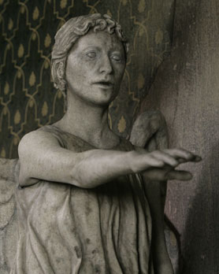

Weeping Angels
Estes assassinos alienígenas sensíveis ao tempo são tão velhos quando o universo. Eles mandam suas vítimas ao passado apenas tocando-as; e os Anjos se alimentam da energia temporal criada pelo distúrbio causado nas vidas dessas vítimas.
Chamados de “Assassinos Solitários”, porque não podem tocar em nada sem mandá-lo de volta no tempo, eles só podem se mexer e atacar se não estiverem sendo observados. Se forem vistos, imediatamente ficam travados e se solidificam, tornando-se pedra – o mecanismo de defesa definitivo.
Além disso, eles dominam seus adversários entrando em seus olhos quando são vistos, ficando na memória e tomando conta da mente da vítima. A imagem de um anjo é um anjo em si própria...
© 2010 BBC WORLDWIDE